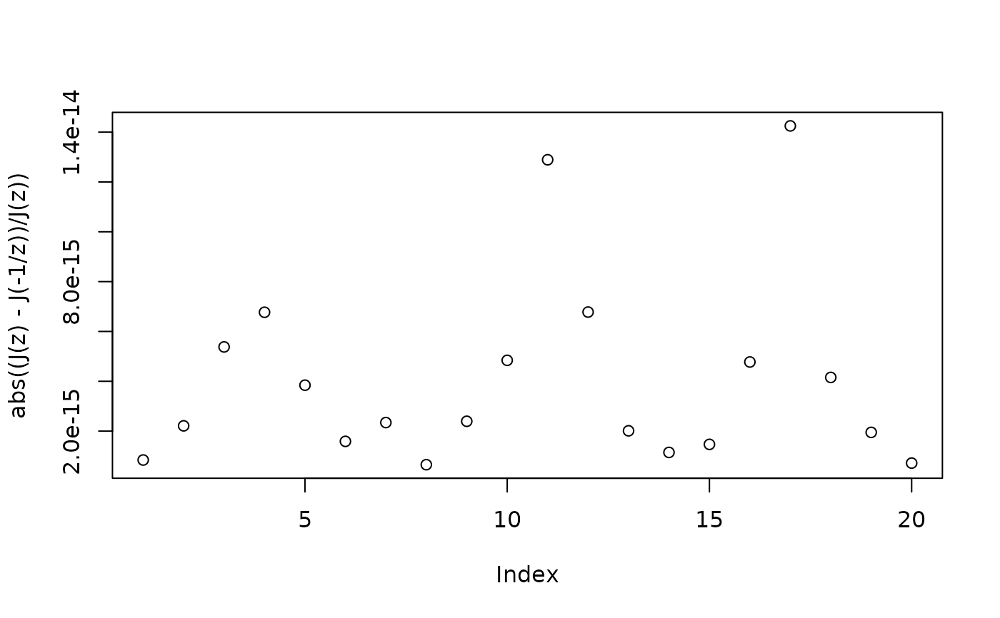

J.RdModular functions including Klein's modular function J (aka Dedekind's Valenz function J, aka the Klein invariant function, aka Klein's absolute invariant), the lambda function, and Delta.
J(tau, use.theta = TRUE, ...)
lambda(tau, ...)K. Chandrasekharan 1985. Elliptic functions, Springer-Verlag.
J(2.3+0.23i, use.theta=TRUE)
#> [1] 12.01226+8.339351i
J(2.3+0.23i, use.theta=FALSE)
#> [1] 12.01226+8.339351i
#Verify that J(z)=J(-1/z):
z <- seq(from=1+0.7i, to=-2+1i, len=20)
plot(abs((J(z)-J(-1/z))/J(z)))

# Verify that lambda(z) = lambda(Mz) where M is a modular matrix with b,c
# even and a,d odd:
M <- matrix(c(5, 4, 16, 13), 2, 2)
z <- seq(from=1+1i, to=3+3i, len=100)
plot(lambda(z)-lambda(M %mob% z, maxiter=100))
#Now a nice little plot; vary n to change the resolution:
n <- 50
x <- seq(from=-0.1, to=2,len=n)
y <- seq(from=0.02, to=2,len=n)
z <- outer(x, 1i*y, "+")
f <- lambda(z, maxiter=40)
g <- J(z)
view(x, y, f, scheme=04, real.contour=FALSE, main="try higher resolution")
view(x, y, g, scheme=10, real.contour=FALSE, main="try higher resolution")